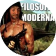
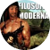

meowed


Curtido por respondeai e outras 101.523 pessoas
Comentários
smallcutecats
Que fofooooooooo s2s2s2
adorable_animals
Eu tenho um gatinho muito parecido com esse aí kkkkkkkkk uma graça, até os olhos são iguais


 


meowed
Curtido por respondeai e outras 101.523 pessoas
Comentários
smallcutecats
Que fofooooooooo s2s2s2
adorable_animals
Eu tenho um gatinho muito parecido com esse aí kkkkkkkkk uma graça, até os olhos são iguais

chibirdart

Curtido por adorable_animals e outras 85.792 pessoas
Comentários
respondeai
A natureza é linda
bad.vibes.memes
a qualidade do vídeo tá um lixo
razoesparaacreditar
Deus fez tudo perfeito!!
barked
Curtido por adorable_animals e outras 99.159 pessoas
Comentários
chibirdart
Que bonitinho kkkk
smallcutecats
lindoooo
nathanwpyle
Que cachorrinho lindo gente! Como eu queria ter um, pena que moro em apartamento. Mas assim que mudarmos para uma casa já está nos nossos planos ter um doguinho assim s2s2s2
chibirdart
Que bonitinho kkkk